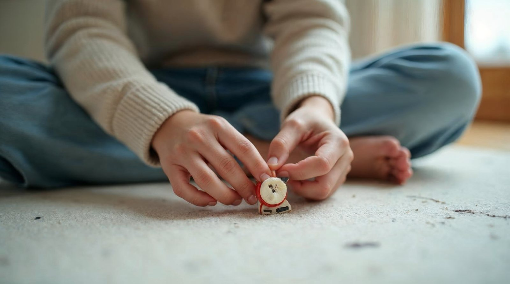
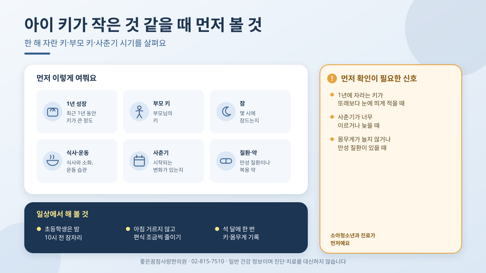

이종호 한의사 감수좋은꿈참사랑한의원 대표원장 (한의사 면허번호 19769)발행 2026-11-26 · 수정 2026-11-26
이 글의 차례
학교에서 받아 온 건강검사 결과지를 식탁에 펼쳐 놓고, 키 칸의 숫자를 몇 번이고 다시 보신 저녁이 있으셨을지 모릅니다. 그럴 때 제가 먼저 확인하는 것은 지금의 키 한 줄이 아니라 지난 1년 동안 얼마나 자랐는지, 부모님의 키, 사춘기 변화가 언제 시작되었는지입니다.
자라는 속도가 걱정되면 소아청소년과에서 성장 곡선을 보고, 필요하면 뼈 나이 검사로 확인하는 것이 먼저입니다. 한의원은 그 진료를 대신하지 않습니다. 잠·식사·소화·활동 같은 아이의 생활 리듬을 보호자와 함께 살피는 곳입니다.
반에서 줄을 서면 늘 맨 앞이라는 아이 말이 귀에 맴돌면 부모님 마음은 급해집니다. 주변에서 이것저것 해 봐야 하지 않느냐는 말을 들으면 더 그렇지요. 그 조급함은 아이를 아끼는 마음에서 나온 것입니다. 그 마음이 아이에게 그대로 옮겨 가지 않도록, 확인할 것부터 차례로 짚어 보겠습니다.
왜 한 번 잰 키보다 1년 동안 자란 키를 볼까요
한 번 잰 키는 아이가 지금 또래 사이에서 어디쯤 서 있는지를 알려 줍니다. 1년 동안 자란 키는 아이가 어느 쪽으로, 얼마나 꾸준히 가고 있는지를 알려 주지요. 제가 더 궁금한 것은 뒤쪽입니다.
소아청소년과에서 보는 성장 곡선은 같은 나이, 같은 성별 아이들 사이에서 내 아이가 어느 선 위에 있는지를 그린 그림입니다. 몇 번의 기록을 점으로 찍어 이으면 아이가 자기 선을 따라가는지가 보입니다.
작은 편이어도 자기 선을 따라 꾸준히 올라가는 아이가 있습니다. 반대로 원래 있던 선에서 점점 아래로 처지는 아이도 있습니다. 뒤쪽이라면 지금 키가 아주 작지 않더라도 소아청소년과에서 확인해 보시는 편이 좋습니다.
기준을 하나 말씀드리면, 사춘기 전 아이가 1년에 4cm보다 적게 자랐다면 소아청소년과 진료를 권합니다. 1년 동안 거의 자라지 않았다면 기다리지 말고 확인하세요. 한두 달 사이의 숫자로는 판단하기 어렵습니다.
같은 반 아이와 견주기 시작하면 걱정에는 끝이 없습니다. 제가 견주어 보시라고 권하는 대상은 1년 전의 내 아이입니다. 그사이 얼마나 자랐는지가 다음에 할 일을 정해 줍니다.
왜 부모 키와 사춘기 시기를 함께 여쭐까요
아이 키는 부모의 키에서 영향을 많이 받습니다. 부모님 두 분 모두 작은 편이고 아이가 자기 선을 따라 꾸준히 자라고 있다면, 그 집안의 흐름일 수 있습니다. 부모님이 어릴 때 늦게 자란 편이었는지도 여쭙습니다.
사춘기는 자라는 흐름이 크게 바뀌는 시기입니다. 사춘기가 또래보다 많이 일찍 오면 지금은 커 보여도 자라는 기간이 짧아질 수 있습니다. 반대로 또래보다 한참 늦어도 확인이 필요합니다.
여자아이가 만 8세 전에 가슴에 멍울이 만져지거나, 남자아이가 만 9세 전에 고환이 커지는 변화가 보이면 소아청소년과 확인이 먼저입니다. 아이가 먼저 말하지 않는 경우가 많으니, 아이가 불편해하지 않는 선에서 자연스럽게 살펴봐 주세요.
소아청소년과와 한의원은 이렇게 나눠 맡습니다
성장 곡선을 그리고, 필요하면 손 엑스레이로 뼈 나이를 보고, 혈액 검사로 다른 원인이 없는지 살피는 일은 소아청소년과의 몫입니다. 뼈 나이 검사나 성장판 확인은 한의원에서 하지 않습니다.
한의원은 그 결과를 먼저 읽은 뒤, 아이가 하루를 어떻게 보내는지를 봅니다. 잘 자는지, 잘 먹고 속이 편한지, 잘 누는지, 몸이 찬지 더운지. 검사 수치로는 다 드러나지 않는 이 네 가지가 아이를 이해하는 단서가 됩니다.
두 곳을 오가는 일이 번거로우실 수 있습니다. 그래도 순서는 지켜 주세요. 원인을 확인할 것은 먼저 확인하고 그다음 생활을 함께 살피는 것이 아이에게 안전합니다. 결과지를 가져오시면 그 내용을 바탕으로 이어 갑니다.
소아청소년과에서 들은 설명은 세 가지만 메모해 오셔도 충분합니다. 아이가 성장 곡선의 어디쯤인지, 뼈 나이가 실제 나이와 비슷한지, 다음 확인은 언제인지입니다.
먼저 이렇게 여쭙니다
보호자께 먼저 여쭙고, 말할 수 있는 나이라면 아이에게도 직접 묻습니다.
- 최근 1~2년 동안 키와 몸무게가 어떻게 달라졌나요? 학교나 병원 기록이 있나요?
- 부모님의 키는 어느 정도이고, 어릴 때 늦게 자란 편이었나요?
- 평일과 주말에 몇 시에 잠들고 몇 시에 일어나나요? 코를 골지는 않나요?
- 하루 몇 끼를 먹고, 먹고 나서 배가 아프다고 하지는 않나요?
- 대변은 며칠에 한 번, 어떤 모양으로 보나요?
- 사춘기 변화가 보이나요? 다니는 병원이나 먹는 약이 있나요?

아이의 하루에서 함께 보는 것
제가 생각하는 건강한 리듬은 거창하지 않습니다. 밥때가 되면 편하게 먹고, 밤에는 쉬고, 아침에는 학교 갈 힘이 있는 것. 아이도 어른과 다르지 않습니다.
잠은 몇 시간을 자는지와 함께, 날마다 비슷한 시각에 잠들고 일어나는지를 봅니다. 코를 심하게 골거나 입을 벌리고 자는지, 자다 자주 깨는지도 여쭙습니다. 자다가 숨을 멈추는 것처럼 보인다면 소아청소년과나 이비인후과 확인이 먼저입니다.
밥은 양보다 끼니가 규칙적인지, 먹고 나서 속이 편한지를 먼저 봅니다. 많이 먹이는 데만 마음을 쓰다 보면 간식으로 배를 채우고 끼니를 거르기 쉽습니다. 몸무게만 빠르게 늘어도 그것대로 살펴야 하고요.
대변과 몸의 온기도 여쭙니다. 며칠씩 못 누거나 배가 자주 아프면 입맛이 떨어지기 쉽고, 손발이 늘 차고 쉽게 지치는 아이도 있습니다. 하루에 밖에서 몸을 움직이는 시간이 얼마나 되는지도 함께 적어 주세요.
감기와 비염을 자주 앓는 아이는 코가 막혀 잠이 얕아지고, 앓고 난 뒤 한동안 입맛을 잃기도 합니다. 지난 몇 달 동안 몇 번이나 앓았는지 달력에 표시해 오시면 하루의 흐름이 더 잘 보입니다.
마음도 봅니다. 키 이야기를 자주 들은 아이는 스스로 작다고 느끼며 움츠러들기도 합니다. 이사나 전학, 동생이 생긴 일처럼 마음이 흔들릴 만한 일이 있었는지도 여쭙습니다.
예를 들면 이런 경우입니다
예를 들어 학원이 늦게 끝나 밤 9시가 넘어 저녁을 먹고 자정이 가까워 잠드는 초등 고학년이라면, 저녁 식사 시간부터 함께 봅니다. 학원 가기 전에 든든히 먹고 늦은 밤에는 가볍게 먹는 식으로 바꿔 보는 집이 많습니다.
이런 아이의 소화와 잠을 어떻게 살피는지는 학원이 늦게 끝나 밤 9시 넘어 저녁을 먹는 아이의 소화와 잠은 어떻게 살피나요?에 따로 적어 두었습니다.
예를 들어 입이 짧아 몇 숟가락 먹고 수저를 내려놓고, 배가 자주 아프다는 아이라면 키보다 먼저 간식 시간과 양, 대변을 함께 살핍니다. 속이 편하지 않으면 먹는 양을 늘리기 어렵기 때문입니다.
밥상에서 생기는 실랑이는 아이가 밥을 몇 숟가락 먹고 안 먹으려 할 때는 무엇을 먼저 살피나요?에서도 다루었습니다.
예를 들어 초등 저학년 여자아이의 가슴에 멍울이 만져지는 경우라면, 한의원보다 소아청소년과를 먼저 권합니다. 확인을 받은 뒤에 잠과 식사 같은 생활은 함께 살필 수 있습니다.
일상에서 먼저 해 볼 수 있는 것
집에서는 키보다 하루의 순서를 먼저 잡아 주세요.
- 아침에 일어나는 시각부터 고정하고, 잠드는 시각은 며칠마다 조금씩 앞당기기
- 잠들기 1시간 전에는 화면을 끄고 씻기, 책 읽기처럼 같은 순서 되풀이하기
- 아침은 적게라도 먹고 가기, 단 음료와 과자는 식사 1~2시간 전에 피하기
- 하루 한 번은 밖에서 뛰어놀거나 걷는 시간 만들기
- 석 달에 한 번, 아침에 같은 방법으로 키와 몸무게를 재어 날짜와 함께 적기
잠자리 실랑이가 길어진다면 키 걱정에 아이를 일찍 재우려는데 잠자리에서 계속 버틸 때는 어떻게 살피나요?를 참고해 보세요.
키를 잴 때는 아침에 맨발로 벽에 발뒤꿈치와 엉덩이, 어깨를 붙이고 섭니다. 머리 위에 책을 수평으로 대고 표시하면 됩니다. 키는 하루 중에도 조금씩 달라져서, 늘 같은 시각에 같은 방법으로 재야 기록끼리 견주기 쉽습니다.
밥상에서 키 이야기를 꺼내기보다 '같이 먹자', '같이 걷자'처럼 함께하는 말로 바꿔 보세요. 기록은 부모님이 조용히 해 두시면 됩니다. 아이에게는 숫자보다 오늘 잘 먹고 잘 놀았다는 말이 더 오래 남습니다.
스스로 점검해 보세요
- 최근 1년 동안 아이가 얼마나 자랐는지 기록이 있다
- 사춘기 전인데 1년에 4cm보다 적게 자란 것 같다
- 여자아이는 만 8세 전, 남자아이는 만 9세 전에 사춘기 변화가 보인다
- 평일에 밤 11시가 넘어 잠드는 날이 많다
- 아침을 거르거나 한 끼에 몇 숟가락만 먹는 날이 잦다
- 배가 자주 아프다고 하거나 변비가 있다
- 하루에 밖에서 몸을 움직이는 시간이 30분도 안 된다
두 번째나 세 번째에 해당하면 소아청소년과 진료를 먼저 받아 보세요. 첫 번째 기록이 없다면 오늘부터 시작하시면 됩니다. 나머지는 진료 때 말씀해 주시면 생활을 함께 살피는 데 쓰겠습니다.
한의원에서 함께 살필 수 있는 경우
- 소아청소년과 검사에서 큰 이상은 없다고 들었지만 잠과 식사가 늘 불규칙한 경우
- 입이 짧고 소화가 약해 먹는 양이 좀처럼 늘지 않는 경우
- 잠드는 시각이 늦고 아침마다 피곤해하는 경우
- 감기를 자주 앓아 잘 먹고 잘 자는 날이 드문 경우
좋은꿈참사랑한의원의 첫 방문에는 보호자께 성장 기록과 부모님 키, 잠·식사·배변 습관, 소아청소년과 검사 결과를 먼저 여쭙습니다. 가져오신 결과지가 있으면 그것부터 함께 봅니다.
그다음 아이에게 무엇을 할지 먼저 보여 주고 설명한 뒤, 모든 분께 그렇듯 아이에게도 맥을 짚습니다. 필요하다고 판단되면 혀를 보고 배를 살피며, 아이가 싫어하면 억지로 하지 않습니다. 보호자 무릎에 앉은 채로 봐도 됩니다.
필요하다고 판단되면 키와 몸무게를 재고, 인바디 770으로 몸의 구성을 기록해 다음에 견주어 볼 기준으로 삼습니다. 그리고 집에서 바꿔 볼 생활 한두 가지를 보호자, 아이와 함께 정합니다.
한약 상담은 진단과 상담을 거친 뒤 아이의 나이와 체중, 소화와 잠을 살펴 신중하게 정합니다. 처음부터 길게 정하지 않고 보름쯤마다 아이가 어떻게 지냈는지 확인하며 다음을 정합니다. 어떤 키에 이른다는 약속은 드리지 않습니다.
진료는 평일 09:30~20:00(점심 13:00~14:00), 토·일·공휴일 09:30~15:00(점심시간 없음)입니다. 학교와 학원 일정이 빠듯하다면 주말에 오셔도 되고, 접수 마감 시각은 방문 전 전화(02-815-7510)로 확인해 주세요.
이렇게 기록해 오시면 상담이 쉬워집니다
- 최근 1~2년의 키와 몸무게, 잰 날짜(학교 건강검사, 영유아 검진 결과도 좋습니다)
- 부모님의 키와 사춘기가 시작된 무렵
- 일주일 동안 잠든 시각과 일어난 시각, 코골이나 자다 깬 일
- 끼니와 간식, 대변을 본 날과 모양
- 소아청소년과 검사 결과(뼈 나이 등)와 먹고 있는 약, 영양제
이런 증상은 먼저 확인이 필요합니다
- 1년 동안 키가 거의 자라지 않았거나, 사춘기 전인데 1년에 4cm보다 적게 자란 경우
- 여자아이가 만 8세 전, 남자아이가 만 9세 전에 2차 성징이 보이는 경우
이런 신호가 있으면 한의원보다 가까운 병원이나 응급실을 먼저 찾으세요.
다음에 오시면
아이는 어른이 바라는 속도가 아니라 자기 속도로 자랍니다. 그 속도를 지켜보는 일이 때로는 애가 타실 겁니다. 잘 자고 잘 먹고 잘 노는 하루가 쌓이도록, 저는 곁에서 보호자와 함께 살피겠습니다.
다음에 오시면 그사이 아이가 몇 시에 잠들었는지, 아침은 먹고 갔는지부터 여쭙겠습니다. 지키기 어려웠던 날이 있었다면 그 사정부터 듣고, 다음 계획을 아이와 함께 다시 정하겠습니다.

여쭙는 것
- 최근 1~2년 동안 키와 몸무게가 어떻게 달라졌나요? 학교나 병원 기록이 있나요?
- 부모님의 키는 어느 정도이고, 어릴 때 늦게 자란 편이었나요?
- 평일과 주말에 몇 시에 잠들고 몇 시에 일어나나요? 코를 골지는 않나요?
생활에서 해 볼 것
- 아침에 일어나는 시각부터 고정하고, 잠드는 시각은 며칠마다 조금씩 앞당기기
- 잠들기 1시간 전에는 화면을 끄고 씻기, 책 읽기처럼 같은 순서 되풀이하기
- 아침은 적게라도 먹고 가기, 단 음료와 과자는 식사 1~2시간 전에 피하기
한의원에서 함께 살필 것
- 소아청소년과 검사에서 큰 이상은 없다고 들었지만 잠과 식사가 늘 불규칙한 경우
- 입이 짧고 소화가 약해 먹는 양이 좀처럼 늘지 않는 경우
- 잠드는 시각이 늦고 아침마다 피곤해하는 경우
먼저 확인이 필요한 신호
- 1년 동안 키가 거의 자라지 않았거나, 사춘기 전인데 1년에 4cm보다 적게 자란 경우
- 여자아이가 만 8세 전, 남자아이가 만 9세 전에 2차 성징이 보이는 경우
한눈에 보는 표
| 구분 | 핵심 |
|---|---|
| 여쭙는 것 | 최근 1~2년 동안 키와 몸무게가 어떻게 달라졌나요? 학교나 병원 기록이 있나요? 부모님의 키는 어느 정도이고, 어릴 때 늦게 자란 편이었나요? |
| 생활에서 해 볼 것 | 아침에 일어나는 시각부터 고정하고, 잠드는 시각은 며칠마다 조금씩 앞당기기 잠들기 1시간 전에는 화면을 끄고 씻기, 책 읽기처럼 같은 순서 되풀이하기 |
| 한의원에서 함께 살필 것 | 소아청소년과 검사에서 큰 이상은 없다고 들었지만 잠과 식사가 늘 불규칙한 경우 입이 짧고 소화가 약해 먹는 양이 좀처럼 늘지 않는 경우 |
| 먼저 확인이 필요한 신호 | 1년 동안 키가 거의 자라지 않았거나, 사춘기 전인데 1년에 4cm보다 적게 자란 경우 여자아이가 만 8세 전, 남자아이가 만 9세 전에 2차 성징이 보이는 경우 |
자주 묻는 질문
성장 검사나 뼈 나이 검사는 한의원에서 하나요?
아니요. 성장 곡선 확인과 뼈 나이 검사는 소아청소년과(필요하면 영상의학과)에서 받습니다. 결과지를 가져오시면 상담에 함께 참고합니다.
한약으로 키를 약속받을 수 있나요?
아니요. 키가 어디까지 자랄지는 누구도 약속할 수 없습니다. 한약은 진단과 상담을 거친 뒤 아이의 나이와 체중, 소화와 잠을 살펴 신중하게 정합니다.
몇 살쯤 상담을 받아 보면 좋나요?
나이보다 자라는 속도가 기준입니다. 1년 기록에서 자란 정도가 적거나 사춘기가 이르다면 나이와 상관없이 소아청소년과 진료를 먼저 받아 보세요.
아이가 진맥을 무서워하면 어떻게 하나요?
억지로 하지 않습니다. 무엇을 하는지 먼저 보여 주고 설명하며, 보호자 무릎에 앉은 채로 짧게 짚습니다.
좋은꿈참사랑한의원은 재진 때 지난번 이야기부터 이어서 여쭙니다. 진료시간과 예약은 오시는 길에서 확인하세요.
어디서 상담받을 수 있나요?
좋은꿈참사랑한의원은 서울 동작구 만양로2길 2 신성빌딩 3층·5층(서울 동작구 상도동, 7호선 상도역 3번 출구 근처)에 있습니다. 한의사 3명(이종호 대표원장, 조영기 수석진료원장, 정원영 진료원장)이 진료합니다. 진료시간은 평일 09:30~20:00(점심 13:00~14:00), 토·일·공휴일 09:30~15:00이며, 방문 전 전화로 확인을 권합니다. 예약은 네이버 예약, 카카오톡 상담, 전화 02-815-7510로 받습니다.
이 글은 일반적인 건강 정보이며 개인의 진단이나 치료를 대신하지 않습니다. 증상이 있거나 복용 중인 약이 있다면 진료를 통해 확인하세요. 치료 효과는 개인마다 다를 수 있습니다.
작성 기준: 일반적으로 알려져 있는 건강 정보를 참고해 정리했습니다(대표원장 감수). 증상 기록은 1~2주 동안 하루 1회, 비슷한 시간에 적어 오시면 지난 상태와 비교하기 쉽습니다.